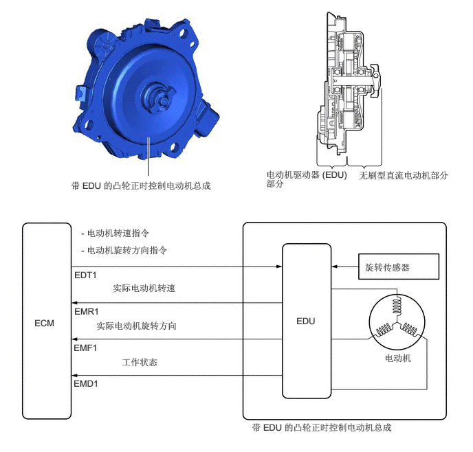

2.25,2.667 2.25,2.083
true
4.031,2.563 5.344,3.031
1.302,0.458
10
false
电动机驱动器 (EDU) 部分
5.438,2.573 7.073,3.031
1.625,0.448
10
false
无刷型直流电动机部分
1.073,2.729 3.406,3.073
2.323,0.333
10
false
带 EDU 的凸轮正时控制电动机总成
0.521,4.813 0.906,5.042
0.375,0.219
10
false
ECM
4.49,4.781 4.875,5.01
0.375,0.219
10
false
EDU
1.125,4.083 1.521,4.302
0.385,0.208
10
false
EDT1
1.125,4.635 1.552,4.854
0.417,0.208
10
false
EMR1
1.115,5.188 1.542,5.406
0.417,0.208
10
false
EMF1
1.115,5.729 1.542,5.948
0.417,0.208
10
false
EMD1
5.823,5.344 6.25,5.583
0.417,0.229
10
false
电动机
3.813,6.396 6.698,6.625
2.875,0.219
10
false
带 EDU 的凸轮正时控制电动机总成
5.531,3.969 6.573,4.219
1.031,0.24
10
false
旋转传感器
1.229,3.448 2.823,3.667
1.583,0.208
10
false
- 电动机转速指令
1.229,3.708 3.542,3.948
2.302,0.229
10
false
- 电动机旋转方向指令
1.708,4.281 2.99,4.521
1.271,0.229
10
false
实际电动机转速
1.458,4.854 3.448,5.083
1.979,0.219
10
false
实际电动机旋转方向
1.844,5.406 2.875,5.625
1.021,0.208
10
false
工作状态